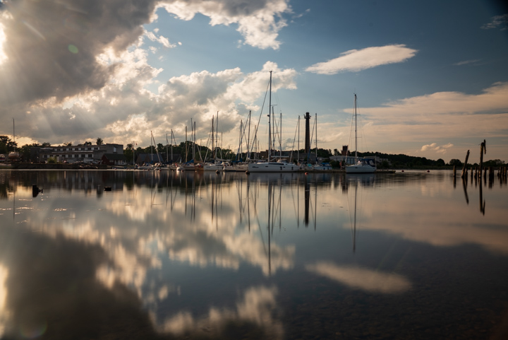

Galleries
Five ongoing bodies of work. Click to enter each gallery.

Wild Horses
They move like wind yet carry the weight of history. I follow storms and silence, chasing moments that vanish as fast as they appear.

UK Quiet
Mist over stone and rail, where time slows and echoes linger longer than voices.

Waterfalls
The roar draws you in; the stillness after the fall is what remains.

Seascapes
I wait for tide, wind, and light to speak in the same voice.
Engure
In this quiet port the water holds its breath; rust and wood remember departures and returns.
Blog
Notes on process, field craft, and the stories behind frames.
Contact
For assignments, collaborations, or prints.